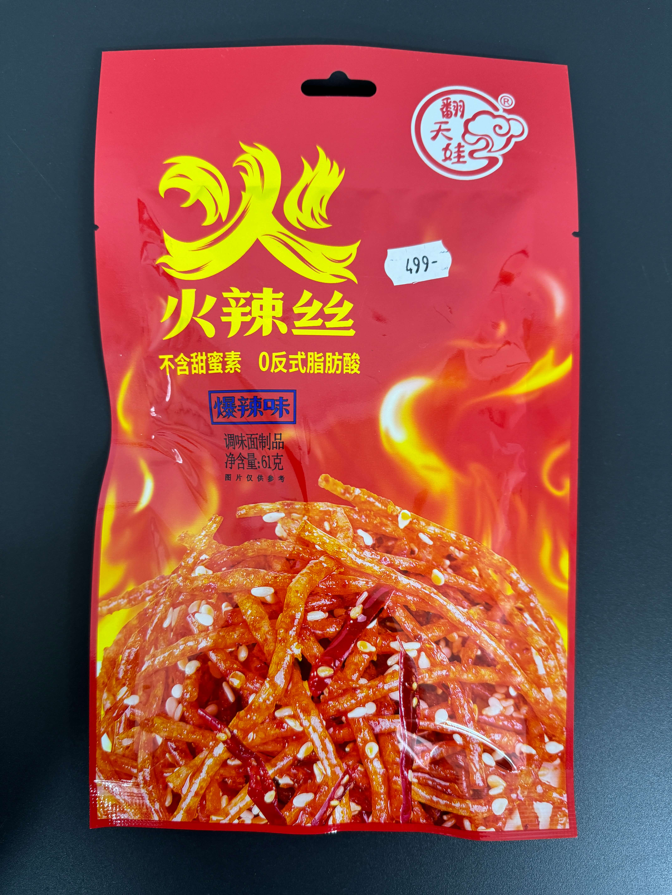

🌶️ Chinese Spicy SnacksKínai Csípős Snackek
What are these? Chewy seasoned strips made from wheat gluten (like seitan) or konjac root — never from meat. Names like "pork strips" or "big knife meat" describe the shape and texture, not the ingredients. Every product here is 100% vegan. Sorted mildest to most extreme.
Mik ezek? Rágós fűszerezett csíkok búzaglútenből (mint a seitan) vagy konjac gyökérből — soha nem húsból. Az olyan nevek, mint "sertéshús csíkok" az alakra és textúrára utalnak, nem az összetevőkre. Minden termék 100% vegán. Az enyhétől az extrémig rendezve.

Sweet-spicy, very mild heat, slightly sticky. Addictive and approachable. The #1 recommendation for first-timers.
Édes-csípős, nagyon enyhe hő, enyhén ragacsos. Addiktív és könnyen fogyasztható. Az első próbálkozók #1 ajánlása.

Lemongrass gives a floral, citrusy brightness. Refreshing and gently spicy. The most unique flavour in the store.
A citromfű virágos, citrusos frissességet ad. Frissítő és gyengéden csípős. Az üzlet legegyedibb íze.

Wide flat wheat gluten chips — crispier than strips, almost cracker-like. Sweet chili flavour, mild heat.
Széles lapos búzagluten chipek — ropogósabb a csíkoknál, majdnem keksz szerű. Édes chili íz, enyhe hő.

China's most iconic spicy snack. Thick wheat gluten strips in chili oil. Bold, savoury, chewy. Hotter than paprika chips but not overwhelming.
Kína legikonikusabb csípős snackje. Vastag búzagluten csíkok chili olajban. Határozott, sós, rágós. Erősebb a paprikás chipsnél, de nem megterhelő.

"Tendon" describes the elastic, pull-apart texture. Tender strips with fragrant chili coating. No actual tendon inside.
Az "ín" a rugalmas, szétszakítható állagot írja le. Puha csíkok illatos chili bevonattal. Nincs valódi ín benne.

Chunky wheat gluten squares — "big knife meat" refers to thick cuts, not the ingredient. Sweet-spicy coating.
Darabos búzagluten kockák — "nagy késes hús" a vastag vágásokra utal, nem az összetevőre. Édes-csípős bevonat.

Toasted sesame softens the chili edge — nutty roasted depth with medium heat. Good for people who find pure chili too sharp.
A pirított szezám tompítja a chili élességét — diós, pirított mélység közepes hővel. Jó azoknak, akik a tiszta chilit túl élesnek találják.

Thin, concentrated sweet-spicy strips with sesame. Old-school recipe — slightly drier, more chili-forward than modern brands. Nostalgic for Chinese people, novel for Europeans.
Vékony, koncentrált édes-csípős csíkok szezámmal. Régi stílusú recept — enyhén szárazabb, chili-előtérbe helyezettebb a modern márkáknál.
What is konjac? A root vegetable processed into firm, springy, gelatinous strips — slippery outside, bouncy when you bite. Almost zero calories. The chew is more like firm jelly than wheat strips.
Mi az a konjac? Egy gyökérzöldség, kemény, rugalmas, zselészerű csíkokká feldolgozva — kívül csúszós, harapásra pattanó. Szinte nulla kalória.

Most beginner-friendly konjac. Aromatic spices with gentle chili warmth. Best entry point if you've never tried konjac before.
A legkezdőbarátabb konjac. Aromás fűszerek enyhe chili meleggel. Legjobb belépési pont, ha még sosem próbáltál konjacot.

Vinegar tang first, then gentle chili warmth builds. Like a sour candy but savoury. Great for sour gummy fans.
Először ecetes savanykás íz, majd enyhe chili meleg. Mint egy savanyú cukorka, de sós.

Coriander (cilantro) is polarising — love it or hate it. Fresh, herbal, with solid chili. China's classic "love it or hate it" challenge snack.
A koriander megosztó — vagy imádod, vagy utálod. Friss, gyógynövényes, erős chilivel.

No actual crayfish — 100% vegan. "Crayfish" is the flavour: smoky, spiced, with the start of Sichuan pepper numbness.
Nincs valódi rák — 100% vegán. A "rák" az íz: füstös, fűszeres, a szecsuáni borsos zsibadás kezdetével.

Konjac jelly strips with full mala spicing — Sichuan pepper tingle and chili heat together. Intense flavour, near-zero calories.
Konjac zselé csíkok teljes mala fűszerezéssel — szecsuáni borsos bizsergés és chili hő egyszerre.

Traditional 1990s recipe before brands modernized. Drier texture, concentrated chili. Nostalgic for Chinese people. Big sharing bag.
Hagyományos 1990-es évekbeli recept. Szárazabb állag, koncentrált chili. Big megosztó zacskó.

Thicker, chewier big version of the old-style recipe. Very satisfying for experienced spice eaters. Big sharing bag.
Vastagabb, rágósabb nagy verzió a régi stílusú receptből. Nagyon kielégítő tapasztalt fűszerevőknek.

Sichuan pepper creates electric tingling and numbing of lips and tongue — not just hot, a completely different sensation. An experience snack.
A szecsuáni bors elektromos bizsergést és zsibadást okoz az ajkakon és a nyelven — nem csak forró, teljesen eltérő érzés.

Thin shredded wheat gluten — more surface area means maximum chili coating on every strand. "Explosive Spicy" on the packaging. Only for people who genuinely love extreme heat.
Vékony aprított búzagluten — több felület jelenti a maximum chili bevonatot minden szálon. Csak azoknak, akik valóban imádják az extrém hőt.

"Numbing-spicy numbing-spicy" — doubled for emphasis. Maximum Sichuan pepper + maximum chili. Your mouth goes numb, then burns.
"Zsibasztó-csípős zsibasztó-csípős" — duplán hangsúlyos. Maximum szecsuáni bors + maximum chili.